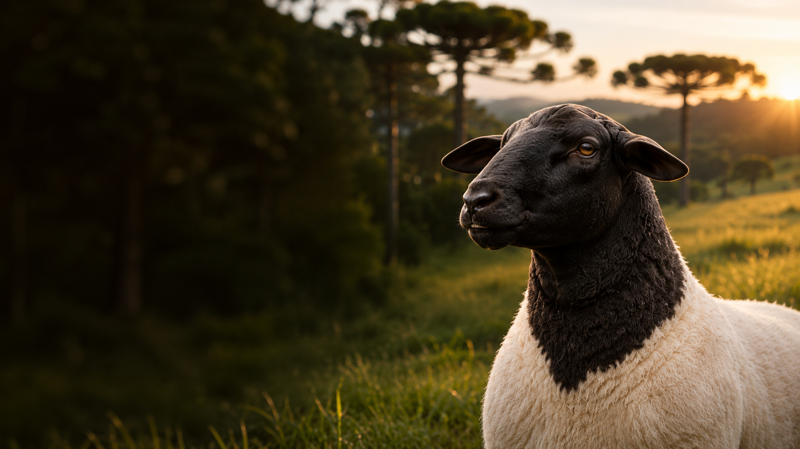

A força da
nossa origem.
Conheça a Cabanha Grandi e sua criação de ovinos Dorper.
De onde viemos.
O que nos une.
Das raízes em Torricella del Pizzo à história da família em Nova Prata, a Cabanha Grandi nasce da iniciativa de Ênio e Anderson Grandi.
Texto editorial proposto, sujeito à revisão familiar.
Espaço reservado para fotografia real autorizada.
Nosso lugar no campo.
Aqui entram os registros da propriedade e as informações confirmadas pela família.
Fotografia pendente
Fotografia pendente
Fotografia pendente
Dorper em foco.
Conheça a criação de ovinos Dorper da Cabanha Grandi. As informações sobre os animais são compartilhadas diretamente pela família.
Animais em destaque
Vamos conhecer sua próxima história?
Entre em contato para consultar os animais disponíveis.
Fale conoscoVamos conversar?
Fale com a família Grandi para saber mais sobre a cabanha e os animais.
Contato oficial em confirmação.
O botão WhatsApp aparece após configurar o número.